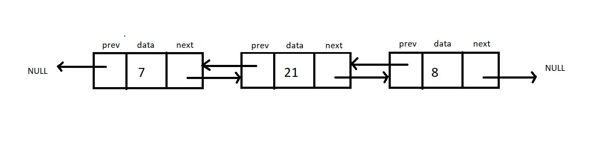

Each node contains a data part and two pointers in a doubly-linked list, one for the previous node and the other for the next node.
Below illustrated is a doubly-linked list with three nodes. Both the end pointers point to the NULL.

struct Node {
int data;
Struct Node *next;
Struct Node *prev; }
;
Here operations are same as single linked list and circular expect we have to take care of 'prev' pointer.
#include <stdio.h>
#include <stdlib.h>
struct Node
{
int data;
struct Node *next;
struct Node *prev;
};
void doubleTraversal(struct Node
*ptr)
{
while (ptr != NULL)
{
printf("Element : %d\n", ptr->data);
ptr = ptr->next;
}
}
struct Node *insertATFirst(struct
Node *head, int data)
{
struct Node *ptr = (struct Node *)
malloc(sizeof(struct Node));
ptr->data = data;
ptr->next = head;
head->prev=ptr;
ptr->prev=NULL;
return ptr;
}
int main()
{
struct Node *head;
struct Node *second;
struct Node *third;
struct Node *fourth;
// Allocate memory fornodes in
linked list in heap (dynamic memory
allocate)
head = (struct Node *)malloc(sizeof<(struct Node));
second = (struct Node *)malloc(sizeof(struct Node));
third = (struct Node *)malloc(sizeof(struct Node));
fourth = (struct Node *)malloc(sizeof(struct Node));
head->data = 7;
head->next = second;
head->prev = NULL;
second->data = 11;
second->next = third;
second->prev = head;
third->data = 211;
third->next = fourth;
third->prev = second;
fourth->data = 66;
fourth->next = NULL;
fourth->prev = third;
doubleTraversal(head);
head = insertATFirst(head, 69);
printf("After insertion\n");
doubleTraversal(head);
return 0;
}